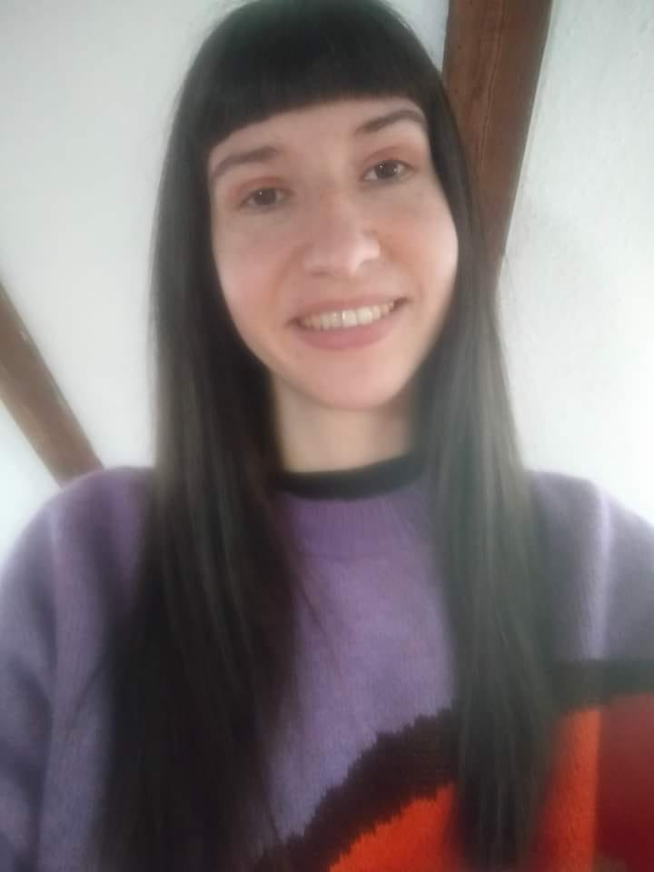
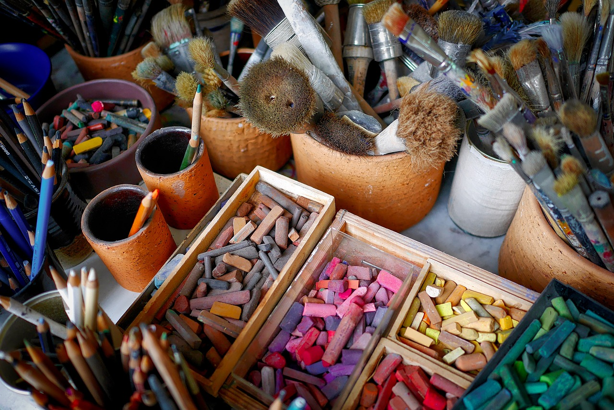

VitaLitté est une entreprise qui a pour but de favoriser l’expression et le partage des émotions ainsi que la créativité grâce à l’art et la lecture. Pour cela, Loryane VINCENT, illustratrice/ créatrice et animatrice propose des carnets illustrés fait main et des ateliers biblio-créatifs (basés sur la bibliothérapie créative et l’art-thérapie).
Grâce aux carnets illustrés, aux cartes postales et marque-pages que forment la papeterie artisanale de VitaLitté, le client peut s’exprimer par l’écrit, le collage, le dessin, la peinture à travers ces supports. Il emploie le carnet à sa guise comme un album photo, un carnet de voyage, un carnet de notes, de croquis… Cette expérience peut être personnelle ou altruiste comme le cas de l’écriture d’une carte postale.
A travers les ateliers biblio-créatifs collectifs, le client peut exprimer sa créativité par un médium artistique (écriture, dessin, peinture, chant) à partir d’un texte lu avec un thème précis. Il peut partager ses ressentis et expériences avec autrui et créer des liens.
Le nom de l’entreprise vient des mots « vitalité » et « littérature ». C’est un lien établi pour mettre en lumière l’importance de se sentir vivant pour l’être humain, de trouver un sens à ce qu’il vit, ce qu’il ressent, fait. Il peut effectuer cette quête à l’aide des livres et de la pratique artistique libre. Les lettres V et L sont volontairement en majuscules pour marquer les initiales de la créatrice à l’origine de l’entreprise.

À travers son art, [Nom de l'Artiste] nous rappelle que la créativité peut être à la fois belle et durable, établissant ainsi un pont entre l'art, l'homme et la nature dans un monde qui a plus que jamais besoin de ces liens essentiels.